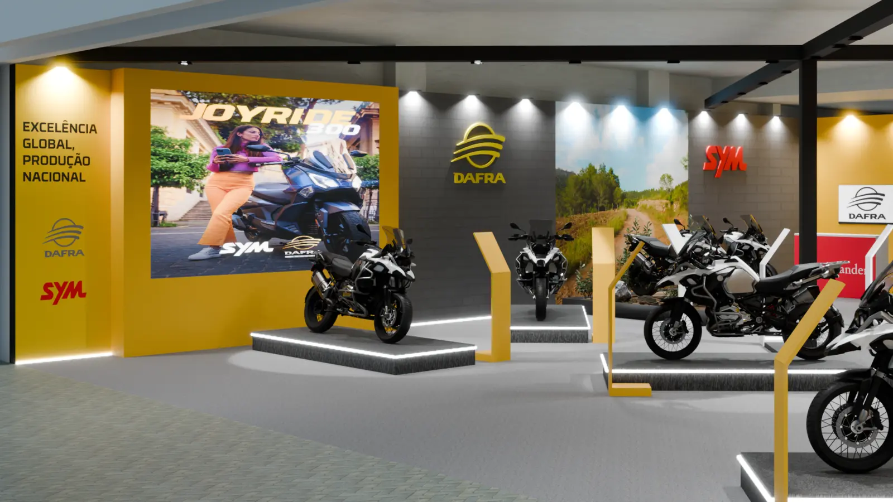
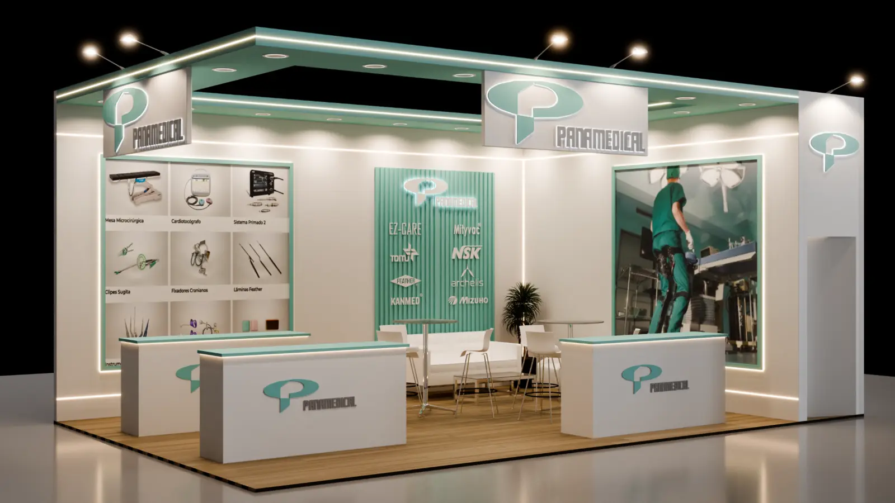
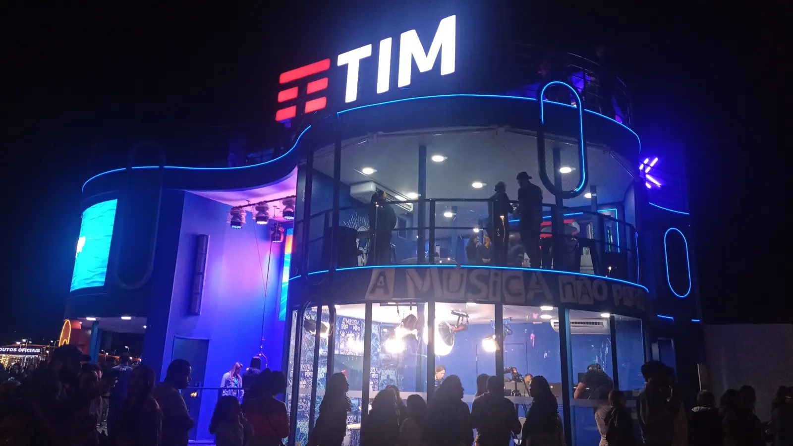
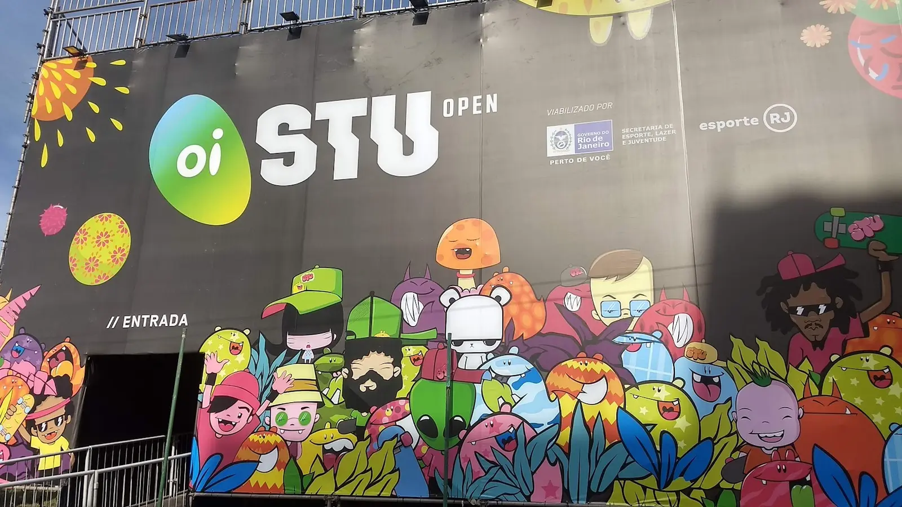
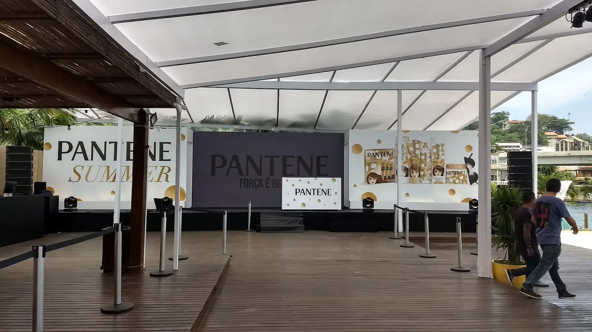
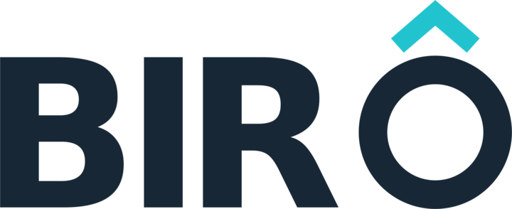

Projeto cenográfico
Concepção, implantação, plantas 2D, imagens 3D e memorial descritivo para visualizar e aprovar antes de produzir.

Cenografia Especial Pedir orçamentoProjetos e soluções cenográficas B2B
Da ideia à montagem, aproximamos criação, viabilidade técnica, orçamento e operação para transformar projetos em entregas possíveis.
01
Cenografia bem pensada
Atuamos como parceiros de agências, produtores, diretores de produção, gestores de eventos e marcas. Entramos para pensar, desenhar, compatibilizar, produzir e acompanhar — com comunicação direta e experiência de campo.
O que fazemos
Concepção, implantação, plantas 2D, imagens 3D e memorial descritivo para visualizar e aprovar antes de produzir.
Compatibilização técnica, leitura de orçamento, materiais, modulação, logística e cronograma pensados para a realidade do evento.
Gestão de fornecedores e produção de elementos cenográficos com a estrutura adequada a cada projeto.
Gestão e acompanhamento de montagem, logística, presença em campo e desmontagem para preservar o projeto até a entrega.
Experiência aplicada
Uma seleção do acervo profissional dos sócios, reunindo projeto, produção, infraestrutura e montagem.





Acervo profissional dos sócios, anterior à criação da Birô Cenográfico. Nos projetos de Rafael Oliveira, atuação pela JD Design. TIM: atuação pela MChecon Cenografia. STU: atuação para a Rio de Negócios. Pantene: atuação para a Titan Cenografia.
Quem faz a Birô

Direção de Produção
Mais de três décadas em produção executiva, direção técnica, infraestrutura e operações de eventos corporativos, culturais e live marketing.
Direção de Projetos
Mais de 20 anos de experiência em criação cenográfica, projetos 3D, desenvolvimento executivo, orçamento e acompanhamento de produção e montagem.
Tem um briefing?
Rio e São Paulo — e projetos por onde fizer sentido.